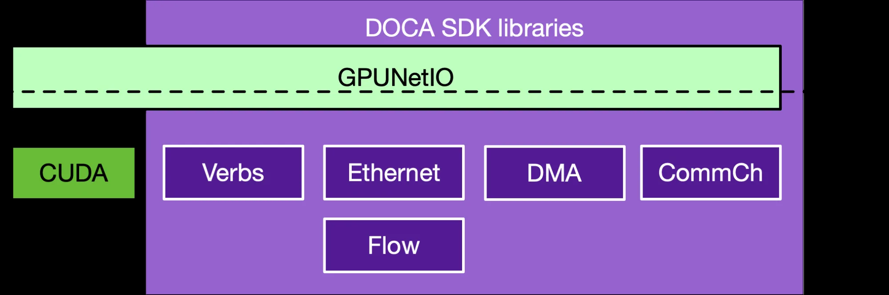
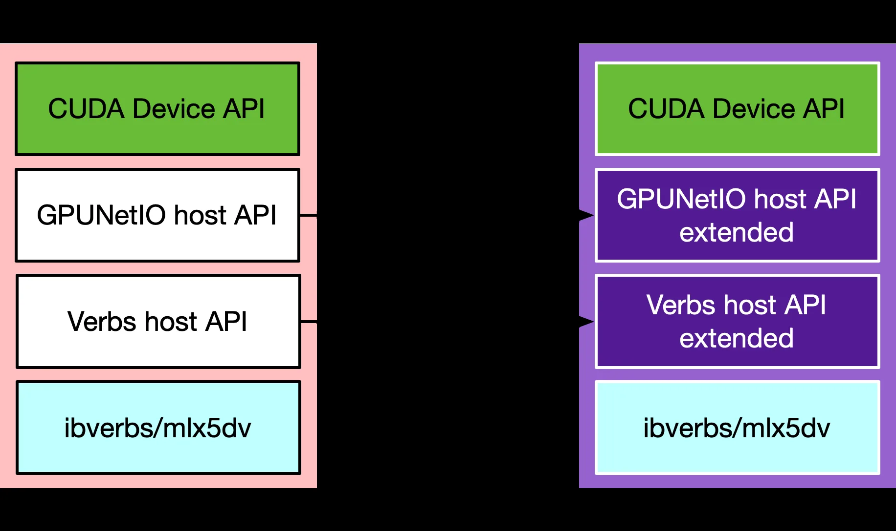
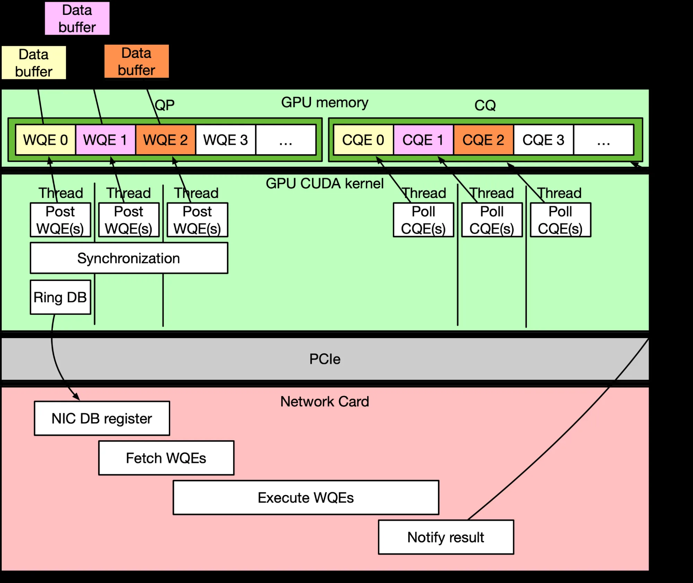
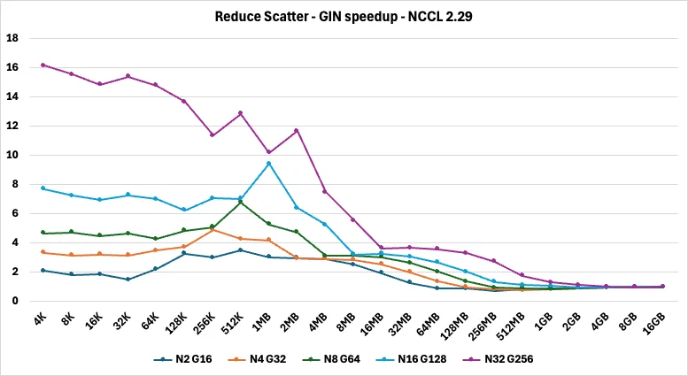
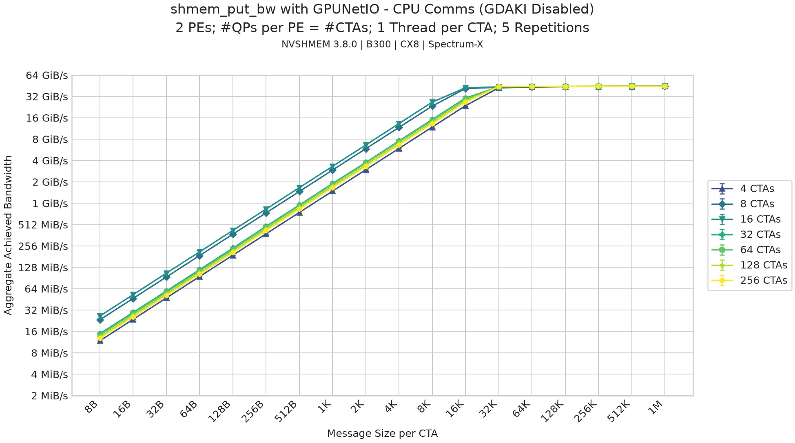
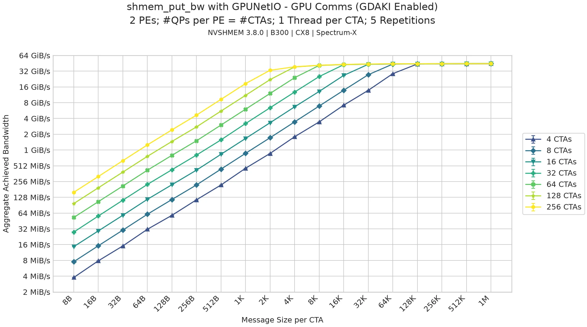
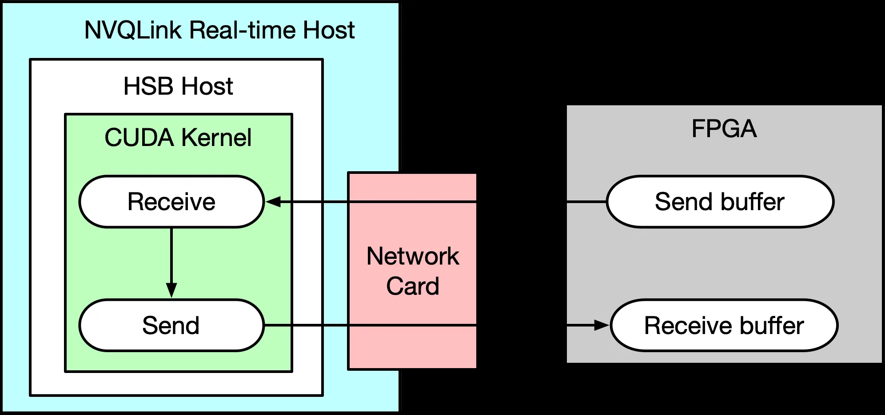

GPU应用要网络像一等GPU操作：每笔事务中间站着CPU，它就是关键路径上的瓶颈。DOCA GPUNetIO的答案是让CUDA kernel直接驱动Ethernet、RDMA、Verbs、DMA：提交WQE、敲网卡门铃、轮询完成，全在GPU上。
更大的变化在生态：NCCL、NVSHMEM、UCX/NIXL这些库此前各养一套GDA-KI实现，现在收敛到同一份GPUNetIO底座上。下面拆统一架构、编程模型、代码与落地数据。
GPU应用越来越需要网络与数据搬运像一等GPU操作，而不是宿主驱动的服务。每笔网络事务中间都站着CPU，它就成了关键路径上的瓶颈：加延迟，拖住分布式应用的实时响应。
NVIDIA DOCA GPUNetIO是面向实时包处理与数据搬运的GPU中心网络SDK层，正面解决这个问题。它把GPUDirect RDMA、GPUDirect Async Kernel-Initiated（GDA-KI）、GDRCopy拢到一起：CUDA kernel直接驱动Ethernet、RDMA、Verbs、DMA操作，CPU不进应用关键路径。
具体来说GPUNetIO给两样东西：控制路径上的CPU函数，把DOCA Ethernet、DOCA Verbs、DOCA DMA、DOCA CommChannel建的GPU内存传输对象导出来；数据路径上的GPU CUDA函数，让CUDA kernel直接操作导出的传输对象。
从GPU中心的包处理首次亮相到现在，框架成熟了很多：从"把CPU踢出关键路径"的利器，长成了统一的GDA-KI底座，集成进NVSHMEM、NCCL、Aerial 5G SDK、UCX/NIXL、NVQLink（配Holoscan Sensor Bridge算子）、Holoscan高级网络算子、DeepEP/HybridEP等。

在GPUNetIO成为公共底座之前，每个通信库都自己实现了一套GDA-KI风格的GPU发起RDMA：各干各的，各自假设、各自代码、各自维护，互不共享。
把这些实现收进GPUNetIO一把伞下，好处直接：各库不用再各自建、各自养一条GDA-KI RDMA路，收敛到同一份GPUNetIO GDA-KI实现上，一处用、一处改、一处扩展。
于是有了公共的投入点：特性、优化、修bug一处做、处处有；SDK之间少重复造轮子；一个框架上的创新很快流到别的框架。对NIXL/UCX、NCCL、NVSHMEM这类上层库尤其值钱：它们一起往GPUNetIO里加东西，也一起吃全栈的改进。生态视角看：代码重复少、行为分化少、长期演进的路更结实。
NVIDIA发两个关系紧密的版本，因为生态既要广度也要开放。完整DOCA SDK版是超集：编程指南里文档化的实现，横跨更广的DOCA栈（Verbs、Ethernet、DMA、CommChannel等），保持"控制路径贴近GPU、CPU不进关键路径"的核心模型。
并行的开源GPUNetIO是更轻的RDMA-Verbs定向实现，给想在传输集成上保持全开放的框架。今天开源版是小的Verbs子集，DOCA SDK版是加了更丰富的RDMA、Ethernet、DMA的超集。
这不是造两套分叉的软件栈：开源给GPU发起RDMA通信一个公共开放底座，DOCA SDK在场时再通向更高级的功能。开源实现运行时能探测DOCA SDK是否存在，有就经dlopen调选定的闭源SDK函数，没有就纯开源实现跑。

CUDA设备侧的gap刻意做小：Verbs路径上开源版和SDK版都暴露设备侧API，GPU编程模型基本对齐，主机侧实现从轻量开源路平滑扩展到DOCA SDK全功能。
用DOCA GPUNetIO的应用先走主机侧CPU配置（控制路径），再让数据路径在GPU上经CUDA kernel跑。控制路径一般四步：初始化配置GPU与网卡、分配内存；建网络传输对象，比如DOCA Verbs/DOCA Ethernet经mlx5dv在CPU上建网络队列对象；GPUNetIO CPU函数把队列对象的相关元素导出成GPU内存里的descriptor，给出GPU地址；应用launch CUDA kernel，把网络队列的GPU descriptor当输入参数传进去。
为简化DOCA Verbs的部分操作，GPUNetIO加了一组高层函数（如doca_gpu_verbs_create_qp_hl），把建RDMA QP、建连的步骤压紧；SDK版和开源版都有。控制路径走完，数据路径在GPU上启动：一个或多个CUDA kernel用GPUNetIO CUDA函数操作导出到GPU内存的传输对象，收发流量。
GPU通信CUDA kernel的通用结构三步：提交WQE，一个或多个CUDA线程往网络队列对象提交Work Queue Entry（RDMA Write、RDMA Read、Ethernet Send/Recv）；敲门铃，一个或多个线程写网卡寄存器通知有新WQE；轮询CQE（可选），等Completion Queue Entry确认WQE执行成功。

Ethernet与RDMA Verbs传输各有两档API。高层API做复杂组合操作：Verbs侧的doca_gpu_dev_verbs_put_signal() 把RDMA Write WQE与RDMA Atomic Fetch and Add WQE按thread scope或warp scope预组合好（warp内协作提交WARP_SIZE个RDMA Write、末尾一个RDMA Atomic），顺手处理同队列上其他CUDA线程的并发提交、敲门铃防race；Ethernet侧的doca_gpu_dev_eth_txq_send() 把提交Ethernet Send WQE与敲门铃按thread/warp/block scope组合好，线程安全，收发两侧同理。
低层API给基本building block，应用自己拼定制组合操作：不同opcode的WQE提交、敲门铃、轮询CQ等CQE。低层API不是线程安全的，同队列的并发访问应用自己同步。
WQE提交进网络队列后必须通知网卡执行，这就是敲门铃：CUDA kernel通知网卡有新活。GPUNetIO给三种敲法：常规门铃，NIC寄存器MMIO映射进CUDA地址空间，CUDA线程直接写；BlueFlame，整个WQE而不只是通知写进NIC寄存器，延迟敏感、队列少的场景用；CPU辅助门铃，NIC寄存器映射进CPU内存，GPU写共享内存区、CPU线程轮询到再敲网卡门铃，给没有GPU直连网卡的系统（如DGX Spark）开GDA-KI。
高层API写GPU发起的以太网包生成器：doca_gpu_dev_eth_txq_send让多个CUDA block并发往共享Send Queue提交WQE，内部处理同步，线程安全，不用应用自己加锁，也不用管WQE/CQE下标这些队列细节。
__global__ void send_packets(struct doca_gpu_eth_txq *txq, uint8_t *addr, const uint32_t mkey, const size_t size, uint32_t *exit_cond)
{
enum doca_gpu_eth_send_flags flags = DOCA_GPUNETIO_ETH_SEND_FLAG_NONE;
doca_gpu_dev_eth_ticket_t out_ticket;
uint32_t num_completed = 0;
/* Only the last thread in the block requests a CQE. */
if (threadIdx.x == (blockDim.x - 1))
flags = DOCA_GPUNETIO_ETH_SEND_FLAG_NOTIFY;
while (DOCA_GPUNETIO_VOLATILE(*exit_cond) == 0) {
doca_gpu_dev_eth_txq_send<DOCA_GPUNETIO_ETH_RESOURCE_SHARING_MODE_GPU,
DOCA_GPUNETIO_ETH_SYNC_SCOPE_GPU,
DOCA_GPUNETIO_ETH_NIC_HANDLER_AUTO,
DOCA_GPUNETIO_ETH_EXEC_SCOPE_BLOCK>(txq, addr, mkey, size, flags, &out_ticket);
/* __syncthreads already present in send with BLOCK scope */
if (threadIdx.x == 0)
doca_gpu_dev_eth_txq_poll_completion<DOCA_GPUNETIO_ETH_CQ_POLL_LAST>(txq, 1, DOCA_GPUNETIO_ETH_WAIT_FLAG_B, &num_completed);
__syncthreads();
}
}低层原语给精确控制：如果包生成器给每个CUDA block配恰好一个Send Queue，高层函数的内部同步开销就不需要了，直接走取WQE指针、准备、提交、轮询的精简模式。
Verbs API同一范式：高层原语实现GPU驱动的ib_write_bw逻辑，doca_gpu_dev_verbs_put按lane/thread索引做put。
template <enum doca_gpu_dev_verbs_exec_scope scope>
__global__ void put_bw(struct doca_gpu_dev_verbs_qp *qp, uint32_t num_iters, uint32_t data_size, uint8_t *src_buf, uint32_t src_buf_mkey, uint8_t *dst_buf,
uint32_t dst_buf_mkey) {
doca_gpu_dev_verbs_ticket_t out_ticket;
uint32_t lane_idx = doca_gpu_dev_verbs_get_lane_id();
uint32_t tidx = threadIdx.x + (blockIdx.x * blockDim.x);
for (uint32_t idx = blockIdx.x * blockDim.x + threadIdx.x; idx < num_iters; idx += (blockDim.x * gridDim.x)) {
doca_gpu_dev_verbs_put<DOCA_GPUNETIO_VERBS_RESOURCE_SHARING_MODE_GPU, DOCA_GPUNETIO_VERBS_NIC_HANDLER_AUTO, scope>(qp,
doca_gpu_dev_verbs_addr{.addr = (uint64_t)(dst_buf + (data_size * tidx)), .key = (uint32_t)dst_buf_mkey},
doca_gpu_dev_verbs_addr{.addr = (uint64_t)(src_buf + (data_size * tidx)), .key = (uint32_t)src_buf_mkey},
data_size, &out_ticket);
__syncthreads();
}
}低层同样可以手搓：reserve_wq_slots占位、取WQE指针、prepare_write填RDMA Write、submit敲门铃、poll_cq_at等完成，每个操作应用自己管。
NCCL GIN（GPU-Initiated Networking）给CUDA kernel设备侧通信抽象层：put、get、signal、wait、flush。NCCL 2.27起GIN以GDA-KI为后端，用的就是开源GPUNetIO Verbs路径：NCCL算法与设备API应用直接从GPU驱动RDMA，队列管理与提交细节藏在GIN接口下。
流程：CPU在communicator初始化时走控制路径（建RDMA QP、注册内存、导出传输descriptor到GPU内存）；配好后数据路径全在GPU：GIN操作映射成GPUNetIO Verbs调用，管WQE准备、敲门铃、轮询完成。每笔网络事务都把CPU踢出关键路径。
通信语义与传输实现解耦：NCCL专注集合算法，GPUNetIO提供hardened的GDA-KI管道；GIN层控制thread/CTA/GPU级资源共享，做请求聚合与队列优化。低延迟高吞吐不断片，RDMA实现只写一遍，全GPU通信生态复用。

NVSHMEM是PGAS编程模型，给GPU集群可扩展的点对点与集合通信原语（put、get、原子、barrier、reduction），CUDA kernel内做细粒度GPU间数据搬运与同步，强扩展收益明显。网络传输按网卡能力与应用需求选：IBGDA传输用MLX5 direct verbs实现GDA-KI。
开源GPUNetIO发布后，NVSHMEM 3.7加了基于GPUNetIO的新传输：站在公共实现层上，吃GPUNetIO的优化与DOCA SDK的高级网卡特性。新传输同时支持GDA-KI通信与主机发起通信（后者控制路径用GPUNetIO配网元，数据路径走CPU跑NVSHMEM原生函数）。选传输设NVSHMEM_REMOTE_TRANSPORT=gpunetio，开GDA-KI设NVSHMEM_GPUNETIO_ENABLE_GDAKI=1。
GPUNetIO传输的GDA-KI部分沿IBGDA的结构，把大段低层代码换成GPUNetIO库调用：门铃的构造与敲铃代码整个外包进GPUNetIO库。功能性能与IBGDA相当，传输实现的复杂度与维护成本大降，这正是收敛公共GDA-KI实现的价值。
开不开GDA-KI，小消息带宽差很多。实验用NVSHMEM性能套件的shmem_put_bw（nvshmem_double_put_nbi），1线程1 QP每CTA，CTA数递增，画两种配置的聚合带宽。

关GDA-KI时，小消息下CTA与QP数量加上去带宽不动：CPU代理成了瓶颈。

开GDA-KI后，小消息带宽随CTA增长，峰值更高、更早触顶。去掉代理瓶颈，CTA与QP的扩展行为完全不同。总体：功能性能保住IBGDA/IBDEVX，NVSHMEM的实现复杂度与维护成本大降。
NVQLink是NVIDIA连量子处理器控制系统与GPU算力的低延迟参考架构：量子纠错、前馈、自适应校准这类实时量子-经典工作流，经CUDA-Q深度集成。Holoscan Sensor Bridge（HSB）用RoCE、轻量FPGA IP与主机侧控制软件给这套打法提供网络底座；NVQLink把HSB模型推进到更低延迟，够live QPU控制用，而不只是常规传感器ingest。
NVQLink用的HSB网络算子叫GPU RoCE Transceiver，基于DOCA GPUNetIO与DOCA Verbs库，目标是转发延迟压到最低。独立模式下算子给网络sanity check与性能分析一条流量转发执行路径。
算子launch一个常驻CUDA kernel，用DOCA GPUNetIO CUDA函数持续从远端收包、原样发回，全程无CPU干预；对端FPGA测包发出到收回的时间。

测转发延迟用NVIDIA IGX Thor（Blackwell GPU + ConnectX-7），对端经OSFP线背靠背连Xilinx RFSoC 4x2板上的FPGA收发计时。FPGA侧测得往返延迟最小约2.6微秒，中位2.7微秒。
五个入口：DOCA SDK GPUNetIO编程指南（完整SDK文档）、开源GPUNetIO仓库（示例与开源实现）、GitHub上的DOCA SDK sample（参考实现）、NCCL tests（GIN设备API参考代码）、Holoscan Sensor Bridge GPU RoCE Transceiver（NVQLink算子）。
选型建议：要全开放的传输集成用开源版；要Ethernet、DMA与更丰富的RDMA能力用DOCA SDK版；两者设备侧API对齐，主机侧可经dlopen衔接。通信库层面，NCCL 2.27+、NVSHMEM 3.7+ 已经把GDA-KI建在GPUNetIO上，新开发直接吃这套公共底座，不用再自建一套。
参考：https://developer.nvidia.com/blog/doca-gpunetio-gda-ki-unified-gpu-networking/